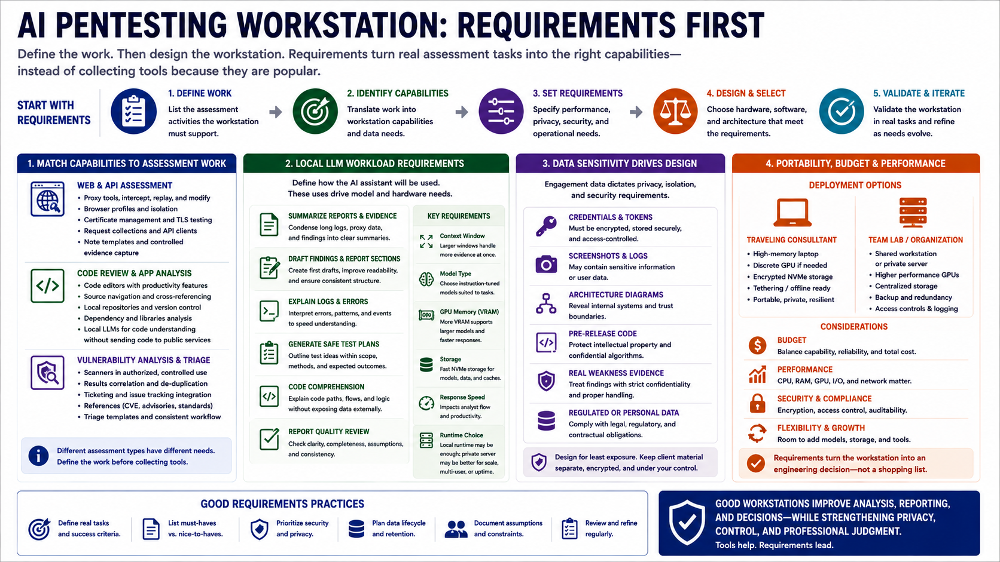

Defining Workstation Requirements
Connecting to LMS... Progress: in progress

Narration
Requirements should come before hardware shopping or tool installation. Start by defining the assessment work the workstation must support. Web application testing has different needs from API assessment, code review, cloud configuration review, report writing, or internal vulnerability analysis. A good requirements list translates real work into workstation capabilities, instead of collecting tools because they are popular.
For web and API assessment, the workstation may need proxy tools, browser profiles, certificate management, request collections, note templates, and controlled evidence capture. For code review, it may need editors, source navigation, local repositories, dependency analysis tools, and AI models that are useful for explaining code paths without sending proprietary code to public services. For vulnerability analysis, it may need scanners in authorized contexts, ticketing integration, references, and templates for consistent triage.
Local LLM workloads introduce their own requirements. Consider whether the assistant will summarize reports, draft findings, explain logs, generate safe test plans, help with code comprehension, or support report quality review. Those uses affect context window, model type, GPU memory, storage, response speed, and whether a local runtime is enough or a private server makes more sense.
Client data sensitivity should shape the design. Some engagements involve credentials, screenshots, logs, architecture diagrams, pre-release code, regulated data, or evidence of real weaknesses. Portability, budget, and performance also matter. A traveling consultant may prefer a high-memory laptop with encrypted storage, while a team lab may prefer a shared workstation or private server. Requirements turn the workstation into an engineering decision instead of a shopping list.